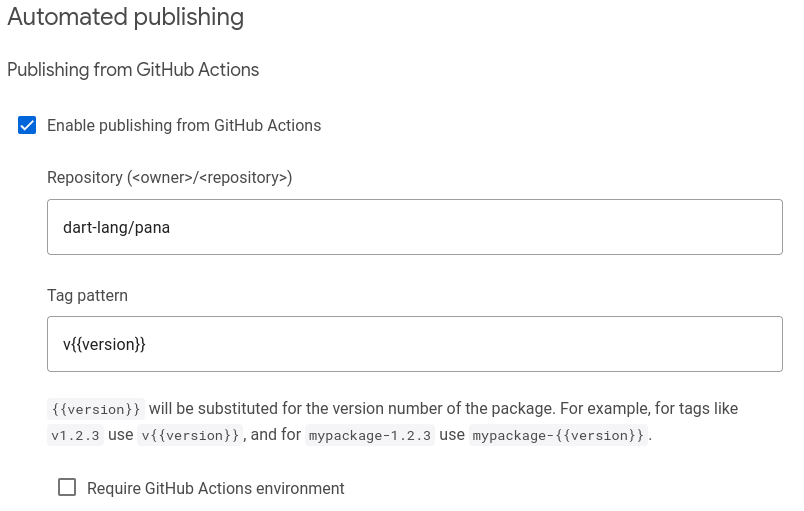
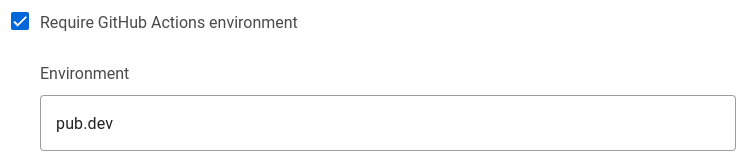
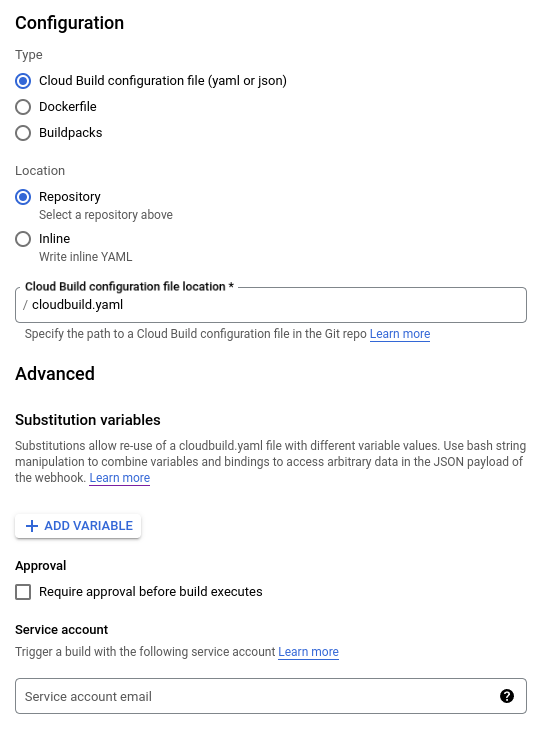

Automated publishing of packages to pub.dev
- Publishing packages using GitHub Actions
- Publishing from Google Cloud Build
- Publish from anywhere using a Service Account
You can automate publishing from:
- GitHub Actions,
- Google Cloud Build or,
- Anywhere else using a GCP service account.
The following sections explain how automated publishing is configured, and how you can customize publishing flows in line with your preferences.
When configuring automated publishing you don’t need to create a long-lived secret that is copied into your automated deployment environment. Instead, authentication relies on temporary OpenID-Connect tokens signed by either GitHub Actions (See OIDC for GitHub Actions) or Google Cloud IAM.
You can use exported service account keys for deployment environments where an identity service isn’t present. Such exported service account keys are long-lived secrets, they might be easier to use in some environments, but also pose a larger risk if accidentally leaked.
Publishing packages using GitHub Actions
You can configure automated publishing using GitHub Actions. This involves:
- Enabling automated publishing on pub.dev, specifying:
- The GitHub repository and,
- A tag-pattern that must match to allow publishing.
- Creating a GitHub Actions workflow for publishing to pub.dev.
- Pushing a git tag for the version to be published.
The following sections outline how to complete these steps.
Configuring automated publishing from GitHub Actions on pub.dev
To enable automated publication from GitHub Actions to pub.dev, you must be:
- An uploader on the package, or,
- An admin of the publisher (if the package is owned by a publisher).
If you have sufficient permission, you can enable automated publishing by:
- Navigating to the Admin tab (
pub.dev/packages/<package>/admin). - Find the Automated publishing section.
- Click Enable publishing from GitHub Actions, this prompts you to
specify:
- A repository (
<organization>/<repository>, example:dart-lang/pana), - A tag-pattern (a string containing
{{version}}).
- A repository (
The repository is the <organization>/<repository> on GitHub.
For example, if your repository is
https://github.com/dart-lang/pana you must specify dart-lang/pana in the
repository field.
The tag pattern is a string that must contain {{version}}.
Only GitHub Actions triggered by a push of a tag that matches this
tag pattern will be allowed to publish your package.

Example: a tag pattern like v{{version}} allows
GitHub Actions (triggered by git tag v1.2.3 && git push v1.2.3) to publish
version 1.2.3 of your package. Thus, it’s also important that the version key in
pubspec.yaml matches this version number.
If your repository contains multiple packages, give each a separate
tag-pattern. Consider using a tag-pattern like
my_package_name-v{{version}} for a package
named my_package_name.
Configuring a GitHub Action workflow for publishing to pub.dev
When automated publishing from GitHub Actions is enabled on pub.dev,
you can create a GitHub Actions workflow for publishing. This is done by
creating a .github/workflows/publish.yml file as follows:
# .github/workflows/publish.yml
name: Publish to pub.dev
on:
push:
tags:
# must align with the tag-pattern configured on pub.dev, often just replace
# with [0-9]+.[0-9]+.[0-9]+*
- 'v[0-9]+.[0-9]+.[0-9]+*' # tag-pattern on pub.dev: 'v'
# If you prefer tags like '1.2.3', without the 'v' prefix, then use:
# - '[0-9]+.[0-9]+.[0-9]+*' # tag-pattern on pub.dev: ''
# If your repository contains multiple packages consider a pattern like:
# - 'my_package_name-v[0-9]+.[0-9]+.[0-9]+*'
# Publish using the reusable workflow from dart-lang.
jobs:
publish:
permissions:
id-token: write # Required for authentication using OIDC
uses: dart-lang/setup-dart/.github/workflows/publish.yml@v1
# with:
# working-directory: path/to/package/within/repository
Make sure to match the pattern in on.push.tags with the tag pattern
specified on pub.dev. Otherwise, the GitHub Action workflow won’t work.
If publishing multiple packages from the same repository,
use a per-package tag pattern like my_package_name-v
and create a separate workflow file for each package.
The workflow file above uses
dart-lang/setup-dart/.github/workflows/publish.yml to publish the package.
This is a reusable workflow that allows the Dart team to maintain
the publishing logic and enables pub.dev to know how the package was published.
Using this reusable workflow is strongly encouraged.
If you need generated code in your package, then it is preferable to check this generated code into your repository. This simplifies verifying that the files published on pub.dev match the files from your repository. If checking generated or built artifact into your repository is not reasonable, you can create a custom workflow along the lines of:
# .github/workflows/publish.yml
name: Publish to pub.dev
on:
push:
tags:
- 'v[0-9]+.[0-9]+.[0-9]+*' # tag pattern on pub.dev: 'v'
# Publish using custom workflow
jobs:
publish:
permissions:
id-token: write # Required for authentication using OIDC
runs-on: ubuntu-latest
steps:
- uses: actions/checkout@v3
- uses: dart-lang/setup-dart@v1
- name: Install dependencies
run: dart pub get
# Here you can insert custom steps you need
# - run: dart tool/generate-code.dart
- name: Publish
run: dart pub publish --force
The workflow authenticates to pub.dev using a temporary
GitHub-signed OIDC token, the token is created and configured in the
dart-lang/setup-dart step.
To publish to pub.dev, subsequent steps can run dart pub publish --force.
Triggering automated publishing from GitHub Actions
After you’ve configured automated publishing on pub.dev and created a
GitHub Actions workflow, you can publish a new version of your package.
To publish, push a git tag matching the configured tag pattern.
$ cat pubspec.yaml
package: my_package_name
version: 1.2.3 # must match the version number used in the git tag
environment:
sdk: ^2.19.0
$ git tag v1.2.3 # assuming my tag pattern is: 'v'
$ git push origin v1.2.3 # triggers the action that publishes my package.
Once pushed, review the workflow logs at
https://github.com/<organization>/<repository>/actions.
If the Action didn’t trigger, check that the pattern configured in
.github/workflows/publish.yml matches the pushed git tag.
If the Action failed, the logs might contain clues as to why it failed.
Once published, you can see the publication event in the audit-log on
pub.dev.
The audit-log entry should contain a link to the GitHub Action run that
published the package version.
If you don’t like using the git CLI to create tags, you can create releases
on GitHub from https://github.com/<organization>/<repository>/releases/new.
To learn more, check out managing releases in a repository from GitHub.
Hardening security with tag protection rules on GitHub
Configuring automated publishing from GitHub Actions allows anyone who can push a tag to your repository to trigger publishing to pub.dev. You can restrict who can push tags to your repository using tag protection rules on GitHub.
By limiting who can create tags matching your tag pattern, you can limit who can publish the package.
At this time, the tag protection rules lack flexibility. You might want to restrict who can trigger publishing using GitHub Deployment Environments, as outlined in the next section.
Hardening security with GitHub Deployment Environments
When configuring automated publishing from GitHub Actions on pub.dev, you can require a GitHub Actions environment. To require a GitHub Actions environment for publishing you must:
- Navigate to the Admin tab (
pub.dev/packages/<package>/admin). - Find the Automated publishing section.
- Click Require GitHub Actions environment.
- Specify an Environment name, (
pub.devis typically a good name)

When an environment is required on pub.dev, GitHub Actions won’t be able to
publish unless they have environment: pub.dev. Thus, you must:
-
Create an environment with the same name on GitHub
(typically
pub.dev) - Alter your
.github/workflows/publish.ymlworkflow file to specifyenvironment: pub.dev, as follows:
# .github/workflows/publish.yml
name: Publish to pub.dev
on:
push:
tags:
- 'v[0-9]+.[0-9]+.[0-9]+*' # for tags like: 'v1.2.3'
jobs:
publish:
permissions:
id-token: write # Required for authentication using OIDC
uses: dart-lang/setup-dart/.github/workflows/publish.yml@v1
with:
# Specify the github actions deployment environment
environment: pub.dev
# working-directory: path/to/package/within/repository
The environment is reflected in the temporary GitHub-signed OIDC token used for authentication with pub.dev. Thus, a user with permission to push to your repository cannot circumvent environment protection rules by modifying the workflow file.
In GitHub repository settings, you can use environment protection rules to configure required reviewers. If you configure this option, GitHub prevents actions with the environment from running until one of the required reviewers have approved the run.

Publishing from Google Cloud Build
You can configure automated publishing from Google Cloud Build. This involves:
- Register a Google Cloud Project (or using an existing project),
- Create a service account for publishing to pub.dev,
- Enable automated publishing in the admin tab for the package on pub.dev, specifying the email of the service account created for publishing.
- Grant the default Cloud Build service account permission to impersonate the service account created for publishing.
- Create a
cloudbuild.yamlfile that obtains a temporary OIDCid_tokenand uses it for publishing to pub.dev - Configure a Cloud Build trigger, for running the steps in
cloudbuild.yamlin your project on Google Cloud Build.
The following sections outline how to complete these steps.
Creating a service account for publishing
For publishing to pub.dev you are going to create a service account that is granted permission to publish your package on pub.dev. You are then going to grant Cloud Build permission to impersonate this service account.
- Create a cloud project, if you don’t have an existing project.
-
Create a service account as follows:
gcloud iam service-accounts create pub-dev \ --description='Service account to be impersonated when publishing to pub.dev' \ --display-name='pub-dev'This creates a service account named
pub-dev@$PROJECT_ID.iam.gserviceaccount.com. -
Grant the service account permission to publish your package.
To complete this step, you must have uploader permission on the package or be an admin of the publisher that owns the package.
a. Navigate to the Admin tab (
pub.dev/packages/<package>/admin). a. Click Enable publishing with Google Cloud Service account. a. Type the email of the service account into the Service account email field. You created this account in the previous step:pub-dev@$PROJECT_ID.iam.gserviceaccount.com

With this procedure complete, anyone who can impersonate the service account can publish new versions of the package. Make sure to review who has permissions to impersonate the service account and change permissions in the cloud project as needed.
Granting Cloud Build permission to publish
To publish from Cloud Build you must give the default Cloud Build service account permission to impersonate the service account created for publishing in the previous section.
-
Enable the IAM Service Account Credentials API in the cloud project. Attempts to impersonate a service account will fail without this API.
# Enable IAM Service Account Credentials API gcloud services enable iamcredentials.googleapis.com -
Find the project number.
# The PROJECT_NUMBER can be obtained as follows: gcloud projects describe $PROJECT_ID --format='value(projectNumber)' -
Grant the permission to impersonate the publishing service account.
# Grant default cloud gcloud iam service-accounts add-iam-policy-binding \ pub-dev@$PROJECT_ID.iam.gserviceaccount.com \ --member=serviceAccount:$PROJECT_NUMBER@cloudbuild.gserviceaccount.com \ --role=roles/iam.serviceAccountTokenCreator
Writing a Cloud Build configuration file
To publish from Cloud Build, you must specify steps for Cloud Build to:
- Impersonate the service account to obtain a temporary OIDC token.
- Provide the temporary OIDC token to
dart pubfor use when publishing. - Calling
dart pub publishto publish the package.
Steps for Google Cloud Build are provided in a cloudbuild.yaml file, see
build configuration file schema for full documentation of the format.
For publishing to pub.dev from Google Cloud Build, a cloudbuild.yaml file as
follows will do:
# cloudbuild.yaml
steps:
- id: Create temporary token
name: gcr.io/cloud-builders/gcloud
volumes:
- name: temporary-secrets
path: /secrets
script: |
gcloud auth print-identity-token \
--impersonate-service-account=pub-dev@$PROJECT_ID.iam.gserviceaccount.com \
--audiences=https://pub.dev \
--include-email > /secrets/temporary-pub-token.txt
env:
- PROJECT_ID=$PROJECT_ID
- id: Publish to pub.dev
name: dart
volumes:
- name: temporary-secrets
path: /secrets
script: |
cat /secrets/temporary-pub-token.txt | dart pub token add https://pub.dev
dart pub publish --force
The gcloud auth print-identity-token creates an OIDC id_token impersonating
the specified service account. This id_token is signed by Google, with a
signature that expires within 1 hour. The audiences parameter lets pub.dev
know that it is the intended recipient of the token. The --include-email
option is necessary for pub.dev to recognize the service account.
Once the id_token is created, it’s written to a file that resides in a
volume; this mechanism is used to pass data between steps.
Don’t store the token in /workspace. Since /workspace is where the
repository from which you wish to publish is checked out.
Not using /workspace for storing the token reduces the risk that you
accidentally include it in your package when publishing.
Creating a Cloud Build trigger
With service accounts configured and a cloudbuild.yaml file in the repository
you can create a Cloud Build Trigger using the console.cloud.google.com
dashboard.
To create a build trigger, you need to connect to a source repository
and specify which events should trigger a build. You can use GitHub,
Cloud Source Repository, or one of the other options.
To learn how to configure a Cloud Build Trigger, check out
creating and managing build triggers.
To use the cloudbuild.yaml from the previous step, configure the
Cloud Build Trigger type as “Cloud Build Configuration” located in the
repository in the /cloudbuild.yaml file.
Do not specify a service account for the build to be triggered with.
Instead you’ll want to use the default service account for Cloud Build.

When configuring your Cloud Build trigger, consider who can trigger the build. Because triggering a build might publish a new version of your package. Consider only allowing manual builds or use Cloud Build approvals to gate builds as outlined in next section.
Hardening security with Cloud Build Approvals
When configuring a Cloud Build trigger, you can select require approval before build executes. If a Cloud Build trigger requires approval, it won’t run when triggered. Instead, it’ll wait for approval. This can be used to limit who can publish new versions of your package.

Only a user with the Cloud Build Approver role can give approval. When giving a approval, the approver can specify a URL and comment.
You can also configure notifications for pending approvals. To learn more, check out gate build on approval.
Publish from anywhere using a Service Account
To allow automated publishing outside of GitHub Actions, you might authenticate using service accounts in way similar to Cloud Build.
This usually involves:
- Create a service account for publishing,
- Impersonate the publishing service account in one of two ways:
- Workload Identity Federation
- Exported Service Account Keys
The section for Cloud Build outlined how to
create a service account for publishing.
This should provide a service account, such as
pub-dev@$PROJECT_ID.iam.gserviceaccount.com.
Publish using Workload Identity Federation
When running on a cloud service that supports OIDC or SAML, you can impersonate a GCP service account using Workload Identity Federation. This enables you to leverage your cloud provider’s identity services.
For example, if deploying on EC2, you can configure workload identity federation with AWS, allowing temporary AWS tokens from the EC2 metadata service to impersonate a service account. To learn how to configure these flows, check out workload identity federation.
Publish using Exported Service Account Keys
When running on a custom system without identity services, you can export service account keys. Exported service account keys allows you to authenticate as said service account. To learn more, check out how to create and manage service account keys.
Export service account keys
-
Create exported service account keys for an existing service account.
gcloud iam service-accounts keys create key-file.json \ --iam-account=pub-dev@$PROJECT_ID.iam.gserviceaccount.com -
Save the
key-file.jsonfile for later use.
Publish packages using exported service account keys
To publish a package using exported service account keys:
-
Setup gcloud to authenticate using
key-file.json(created in the previous step)gcloud auth activate-service-account --key-file=key-file.json -
Create a temporary token for pub.dev and pass it to
dart pub token add https://pub.dev. To impersonate service account, include the--include-emailoption.gcloud auth print-identity-token \ --audiences=https://pub.dev \ | dart pub token add https://pub.dev -
Publish using the temporary token. Add the
--forceoption to skip theyes/noprompt.dart pub publish --force